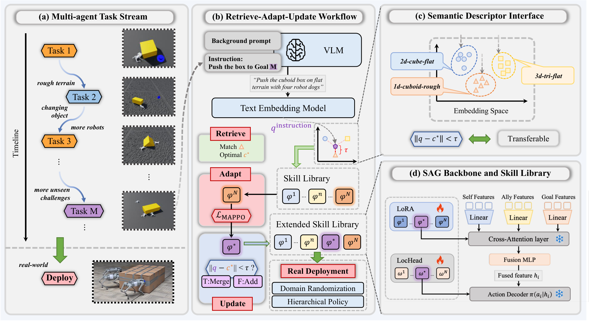
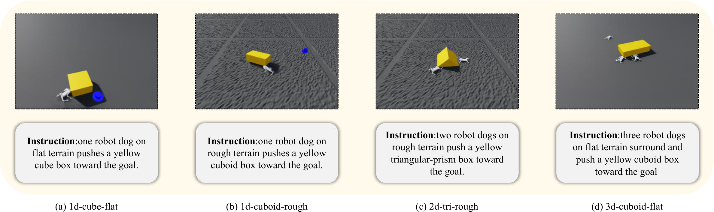
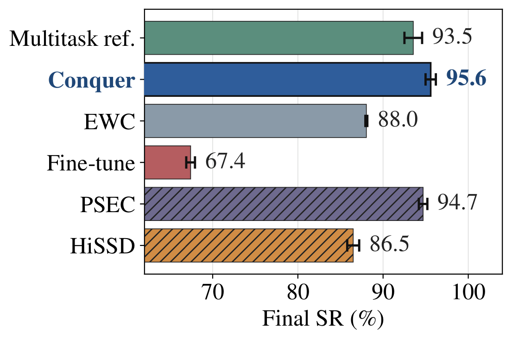
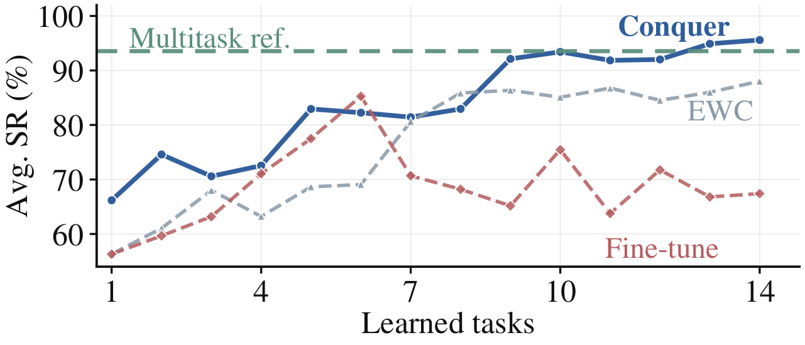
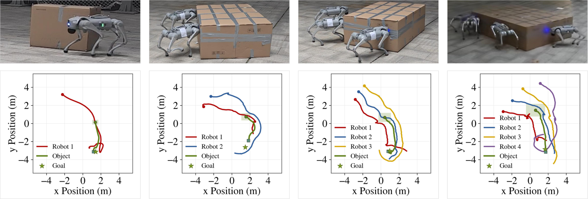

Conquer:
Continual Quadruped Robots Coordination via Sementic Skill Discover
Method Overview

Simulation Tasks

Comparison with Baselines
Conquer achieves 0.9626 final average success rate on a 14-task Isaac Lab benchmark, consistently outperforming prior continual RL and multi-agent approaches including MAPPO, PackNet, EWC, and Progressive Networks.


Real-Robot Deployment

Real-robot Demonstrations
Single-dog Fixed-point
Two-dog Fixed-point
Three-dog Tracking
Three-dog Fixed-point
Four-dog Fixed-point
Simulation Demonstrations
1D Cube (Flat)
1D Cube (Rough)
1D Cuboid (Flat)
1D Cuboid (Rough)
1D Triangle (Flat)
1D Triangle (Rough)
2D Cuboid (Flat)
2D Cuboid (Rough)
2D Triangle (Flat)
2D Triangle (Rough)
3D Cuboid (Flat)
3D Cuboid (Rough)
3D Triangle (Flat)
3D Triangle (Rough)
Abstract
Multi-quadruped coordination has attracted increasing attention due to its stronger payload capacity, broader contact coverage, and better adaptability to challenging tasks. However, existing multi-quadruped manipulation methods typically focus on a closed task family, and thus struggle to continually acquire and reuse coordination skills in open-ended task streams.
To address this issue, we propose Conquer, a semantic skill-library framework that models continual multi-quadruped coordination as a skill retrieve-adapt-update process. For each incoming task, Conquer first builds a semantic descriptor from pre-execution information and retrieves a relevant skill from the library; it then either reuses the retrieved policy or adapts a new skill adapter through MAPPO, and finally updates or expands the library using descriptors extracted from successful trajectories. This process is built on a team-structured Self-Allies-Goal (SAG) backbone that supports variable-size robot teams while keeping stored skills parameter-isolated.
Experiments on a 14-task Isaac Lab benchmark show that Conquer achieves 0.9626 final average success rate with strong forward transfer and no forgetting. Real-world rollouts on Unitree Go2 teams further demonstrate its deployment feasibility for real-world multi-quadruped coordination.
Team
BibTeX
@misc{conquer2026,
title = {Conquer: Continual Quadruped Robots Coordination via Sementic Skill Discover},
author = {Anonymous},
year = {2026},
}